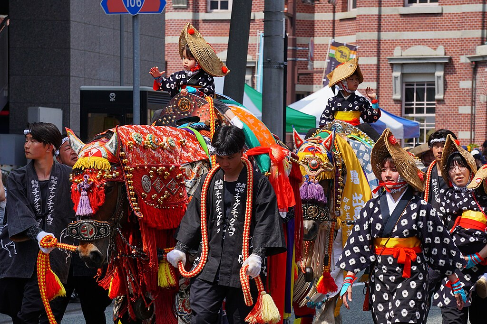

岩手銀行赤レンガ館付近を練り歩くチャグチャグ馬コの行列
By 掬茶 - Own work,
CC BY-SA 4.0,
Link
ダミーテキストダミーテキストダミーテキストダミーテキストダミーテキストダミーテキストダミーテキストダミーテキストダミーテキストダミーテキストダミーテキストダミーテキストダミーテキストダミーテキストダミーテキストダミーテキストダミーテキストダミーテキストダミーテキストダミーテキストダミーテキストダミーテキストダミーテキストダミーテキスト